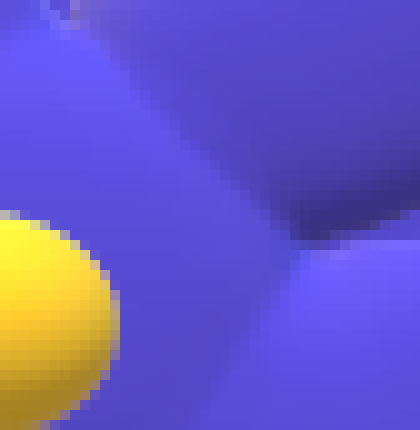
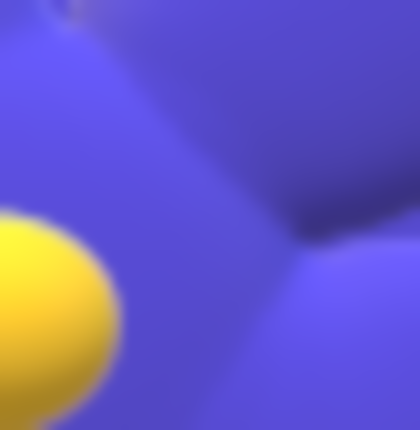

Данная стать посвящена алгоритмам интерполяции на примере увеличения и уменьшения изображений. В статье описываются алгоритмы про интерполяцию в общем и интерполяцию на примере изменения размера изображений. Главное выделить смысл заполнения промежутков (включая значащие точки) при увеличении и уменьшении.
Интерполяция — это определение промежутков дискретной функции при потере её значения (к примеру, из-за качества сигнала датчика) или её масштабирование с помощью интерполянтов.
Интерполяция позволяет получить необходимые значения для промежутков или разрывов между значащими точками. Значащие точки — это уже известные точки функции, к примеру, точки изначального изображения, показания с датчиков, имеемые точки функции и т.п.
Не путайте данные методы интерполяции с математеческими методами интерполяции (линейная интерполяция с продолжением, полином Лагранжа, т.п.).
В статье приведено несколько видов интерполяции. Это позволит узнать возможности интерполяции на базовом, хотя можно сказать, на продвинутом уровне и придумать более сложные способы интерполяции(интерполянты). Хотя достаточно и этих способов для всех случаев, хотя и не обязательно — решайте сами, но я предлагаю для всего линейную, билёнейную интерполяцию и развитие её смысла для других базисов.
Далее рассматриваются способы интерполяции, приведённые примеры интерполирования решаются системой линейных алгебраических уравнений, подстановкой значащих точек в уравнение интерполянта.
Интеполирование в одномерном пространстве представляет нахождение собой значение функции y(t), где известны значащие точки y1(t1), y2(t2), y3(t3), y4(t4) и т.д., но нужно найти значение между ними. Значение находится на промежутках [t1;t2],[t2;t3];[t3;t4] и т.д.
Смысл этого способа интерполяции заключается в том, что значение функции дублируется до следующего или предыдущего значения, но однозначно для последующих точек.
Далее рассмотрим рисунок этой концепции:
Рис. 1. Концепция Интерполяции способом дублирования значения (для способа дублирования до правого/левого).
Смысл этого способа интерполяции заключается в том, что значение функции берётся то, как у ближайшего соседа. Этот вид интерполяции по результату равен 1-ому способу (2.1. Дублирование до следующего).
Рис. 2. Концепция Интерполяции способом дублирования до ближайшего соседа.
Смысл этого способа интерполяции заключается в том, что значение функции берётся линией, соединяющей две точки.
Рис. 3.1. Концепция Линейной интерполяции.
Рис. 3.2. Концепция Линейной интерполяции.
Смысл интерполяции заключается в том, что значения точек соединяются кривыми второго порядка (квадратичными или они также называются параболами).
Квадратичная кривая проходит через три точки, которые не являются корнями уравнения параболы, но она через них проходит не симметрично. Парабола геометрически однозначно задаётся тремя точками. Просьба не путать с корнями параболы, корня у параболы максимум два, и они означают координаты точек(и) пересечения с осью абсцисс. Попробуйте написовать параболы и вы увидите, что через три случайные точки однозначно проходит только одна парабола и интервалы не одинаковы.
Рис. 4. Концепция Квадратической интерполяции.
Интерполяция заключается в том, чтобы провести кубическую кривую, через 4 точки.
Рис. 5. Концепция Кубической интерполяции.
На рисунке далее две значащие точки соединяются кругом:
Рис. 6.1. Концепция Радиальной интерполяции.
На Рис. 6.1. показана концепция Радиальной интерполяции, если между точками равные промежутки. Представьте себе уровни значений значащих точек на круге: если считать, что между точками не равные промежутки, а они просто должны попадать на круг последовательно, то можно интерполировать сразу три значащие точки:
Рис. 6.2. Концепция Радиальной интерполяции.
Это свойство можно использовать для всех интерполянтов и оно представлено на всех примерах инетрполянтов выше и ниже.
Эллиптическая интерполяция производится по аналогии с радиальной, но кривой берётся эллипс.
Рис. 7. Концепция Эллиптической интерполяции.
Интерполяция может проводиться любыми Кривыми Безье. На Рисунке 8 приведён пример интерполяции Кривыми Безье второго порядка.
Рис. 8. Концепция интерполяции Кривыми Безье.
Интеполирование в двумерном (трёхмерном, если учитывать для базиса ещё один вектор для значения функции) пространстве представляет нахождение собой значение функции z(x,y), где известны значащие точки z1(x1, y1), z2(x2, y2), z3(x3, y3), z4(x4, y4) и т.д., но нужно найти значение между ними. Интерполяция происходит для промежутком значащих координат функции.
Пусть у нас есть значащие точки функции z(x,y) и нужно интерполировать точку между четырмя значащими точкима дублированием. Для этого точки нумеруются однозначно и интерполирование идёт повторением одно определённой точки с одинаковым номером (позицией).
Рис. 9. Концепция Двумерной интерполяции Дублированием до следующего/предыдущего.
На Рис. 9 показана интерполяция повторением точки 1.
Пусть у нас есть функция z(x,y) и есть четыре значащих точки, между которыми требуется интерполировать значение. Для этого вычисляем расстояние до каждой точки на плоскости XY и выбираем минимальное расстояние. При равных расстояниях, можно выбрать точку до которой происходит округление.
Рис. 10. Концепция Двумерной интерполяции по ближайшему соседу.
На координатах задаются проекции на ось, на которых сами точки соеденены линиями. Проецирование заданных координат для интерполяции происходит на линию, соединяющие заданные точки. Потом пересечения в свою очередь соединяются линиями, как понятно, они проходят над начальными коодинатами. От начальных координат до них (их пересечения) строится интерполированное значение. Аналагично строятся точки в примерах далее.
Рис. 11. Концепция Билинейной интерполяции.
Биквадратическая происходит также, как и биленейная, но уже точки и интерполируемая точка соединяются не линиями, а квадратическими кривыми.
Рис. 12. Концепция Биквадратической интерполяции.
Бикубическая схожа остальным типам двумерной интерполяции, только требует больше значащих точек, и соединять уже нужно искомые точки кубическими кривыми.
Рис. 13. Концепция Бикубической интерполяции.
Бирадиальная интерполяция, Биэллиптическая интерполяция, Би-интерполяция Кривыми Безье по смыслу и количеству точек схожа с Биквадратической интерполяцией, только отличие в том, что находимые и значащие точки соединяются не квадратическими кривыми, а соответствующие виду интерполяции. Их концепцию можно понять по картинке Биквадратической интерполяции.
Рис. 14. Концепция Бирадиальной интерполяции, Биэллиптической интерполяции, Би-интерполяции Кривыми Безье.
Интерполянт задаётся в базисе уравнением от переменных (n-1), где n — это размер базиса. Значение функции от этих переменных — это интерполируемое значение.
Т.е. к примеру 3D-интерполянт задаётся функцией f(x,y,z) для 4-х мерного базиса. Как представлено ранее, би-интерполяция — это задание интерполянта функцией z(x,y).
Рис. 15. Интерполянт.
Значение, соединяющее точки, генерируемое по функции, параметрическому уравнению, ряду и т.п. называется интерполянтом. Придумывайте свои для каждого случая или довольствуйтесь линейным. Интерполянт можно использовать для заполнения промежутков, для поиска неизвесных точек. Так же, аналогично интерполянт можно использовать для увеличения или уменьшения. Значение увеличеное (или уменьшенное) определяется только по интерполянтам. Иными словами, если нам нужно заполнить промежутки между точками, вызванные масштабированием или потерей значения, то эти промежутки заполняются специальным правилом, называемым интерполянтом.
К примеру, интерполянт может быть другой для Вашего случая, но более чем достаточно приведённных способов интерполяции.
К примеру, требованием может быть то, что набор значений и интреполянт имеют равный уровень дискретизации, или он представляет собой усилитель резкости, или предназначен для уменьшения дефектов сжатия, или др.
Рис. 16. Другой интерполянт.
Основное свойство для проектируемого интерполянта — он должен однозначно заполнять промежутки для заданных настроек/конфигурации.
В данном разделе статьи приведена сводная картина для интерполирования функций с множеством значений. Рисунки выше показывают только определённые частоприменяемые концепции, далее приведина их сводная картина.
Рисунок очень большой по размеру, так что просмотреть его можно только у себя на компьютере или плакате: Сводная картина интерполянтов.
В данном разделе приведены примеры интерполяции при увеличении изображения в программе GIMP 2.10.8.
Далее приведём пример работы программы, на примере следующего изображения:
Рис. 17. Исходное изображение.
Рассмотрим далее увеличение интерполированием изображений следующими способами:
И в конце сравним эти четыре типа по результатам.
Рассмотрим только увеличение на части Рис. 17:
Рис. 18. Исходное изображение. Увеличивываемая часть.

Рис. 19. Увеличение дублированием.
Рис. 20. Линейное увеличение.

Рис. 21. Кубическое увеличение.
Посмотрим на рисунок далее и сравним результаты:

Рис. 22. Сравнение увеличений.
Как видно, кубическая интерполяция дала самый лучший результат. Если Вам требуется увеличить изображение без потери значащих точек, то интерполяция дублированием подойдёт Вам. Линейная интерполяция изображений оказалась менее точной, по сравнению с кубической, но она требует меньше процессорного времени.
В заключение могу пожелать Вам написание своего графического редактора, развивать другой или смелее пользоваться готовыми. Можно также написать консольную утилиту для интерполяции изображений.
Не путайте данные методы интерполяции с математеческими методами интерполяции (линейная интерполяция с продолжением, полином Лагранжа, т.п.).
Если будете писать свой графический редактор, то запрограммируйте интеполянт так, чтобы он однозначно заполнял промежутки для заданных настроек/конфигурации.